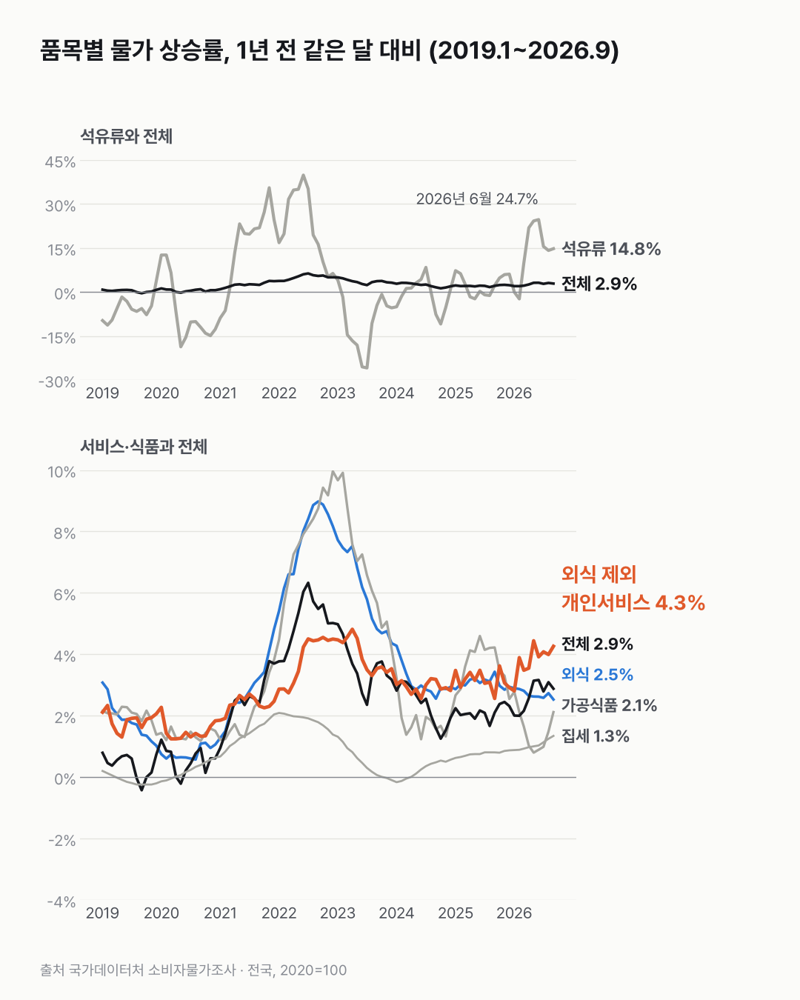
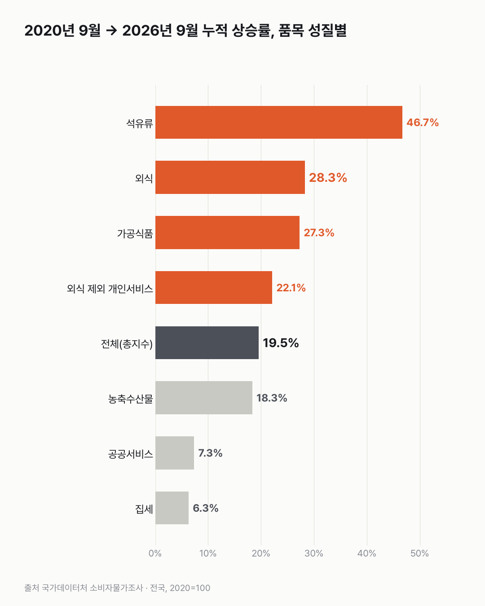

요즘 빨리 오르는 건 밥값보다 서비스 요금이에요
요즘은 외식·가공식품보다 외식을 뺀 서비스 요금과 기름값이 더 빨리 오르고 있어요.

- 2026년 9월, 외식을 뺀 개인서비스 요금은 1년 전보다 4.3% 올랐어요. 전체 물가는 2.9%였어요.
- 외식은 2.5%, 가공식품은 2.1% 올라 전체보다 덜 올랐어요.
- 기름값(석유류)은 2026년 6월 24.7%까지 올랐다가, 9월엔 14.8%예요.
머리를 자르고, 세탁소에 옷을 맡겨요. 식당 밥값은 아니지만 꼬박꼬박 나가는 돈이에요. 물가표에선 이런 값이 '외식 제외 개인서비스'에 들어가요.
이 묶음이 2026년 9월 1년 전보다 4.3% 올랐어요. 전체 물가(2.9%)보다 높고, 2026년 2월부터 3~4%대가 이어지고 있어요.
밥값은 덜 올랐어요. 외식은 2.5%, 가공식품은 2.1%예요. 2022~2023년엔 각각 9.0%·10.0%까지 올랐던 것들이에요.
석유류는 2026년 6월 24.7%까지 올랐다가 9월엔 14.8%예요. 보도에 따르면 정부는 석유 최고가격제로 9월 전체 물가 상승률이 약 0.6%p 낮아졌다고 추산했어요.
6년 누적으로 보면 순서가 바뀌어요. 석유류 46.7%, 외식 28.3%, 가공식품 27.3%, 외식 제외 개인서비스 22.1%가 전체(19.5%)보다 많이 올랐어요. 공공서비스는 7.3%였어요.
집세 오르는 속도는 생각보다 훨씬 느렸어요. 6년 동안 6.3%, 2026년 9월엔 1년 전보다 1.3%예요. 그래도 2024년 초부터는 조금씩 올라가고 있어요.

지금 빨리 오르는 것과 6년 동안 많이 오른 것이 서로 달랐어요. 각자 느끼는 물가가 어느 쪽에 더 가까운지는 이 표로 답할 수 없었어요.
이 숫자는 어디서 왔나요
출처
기준일 2026년 9월(1년 전 같은 달과 비교)이고, 누적은 2020년 9월 → 2026년 9월이에요.
국가데이터처소비자물가조사
- 품목성질별 소비자물가지수(2020=100)KOSIS DT_1J22002원본 보기
전국 월별 지수, 2018.1~2026.9
어떻게 셌나요
- 소비자물가지수는 같은 품목 바구니의 가격을 2020년 = 100으로 놓고 잰 값이에요. 가중치 기준은 2022년이에요.
- 상승률은 1년 전 같은 달 지수와 비교해 직접 계산했어요. 발표된 값과 반올림 때문에 0.1%p 다를 수 있어요.
- 외식 제외 개인서비스는 개인서비스에서 외식을 뺀 거예요(통계표 분류).
- 지수로는 지역 사이 가격 수준을 비교할 수 없어요. 이 글은 전국만 봐요.
한계 4가지
이 데이터로 말할 수 없는 것
- 물가지수는 같은 품목 바구니의 가격 변화예요. 각자 쓰는 돈의 변화와는 달라요.
- 2020년 9월은 유가가 낮던 때라 석유류 누적 상승률은 기준 시점 영향이 커요.
- 공공서비스는 해마다 크게 출렁여서(정책 변경 영향으로 보이지만 이 표로 확인되지 않아요) 추이 차트에서 뺐어요(누적 차트에는 있어요).
- 원인과 전망은 말하지 않아요. 투자·소비를 권하지 않아요.
계산 기록
처음 던진 질문
서비스 물가가 오른다는 뉴스가 자주 나와요. 외식, 외식 뺀 개인서비스, 석유류, 가공식품, 집세 중 무엇이 전체 물가보다 빨리 오르는지, 2019년부터 2026년 9월까지 흐름과 6년 누적으로 봤어요.
수집·검증 기록
- 데이터를 받기 전에 쓴 계획(premises.md)을 그대로 따름.
- 표: KOSIS DT_1J22002 (전국 월별, 2018.1~2026.9). 수집일 2026-10-30 (KOSIS 오픈API).
- 계산: 상승률 = 1년 전 같은 달 지수 대비. 공표값과 반올림으로 0.1%p 다를 수 있음.
- 교차 확인: 2026년 9월 소비자물가 2.9%, 석유류 14.8%, 가공식품 2.1%가 보도와 같고, 외식 제외 개인서비스 4.3%는 정부 '최근 경제동향'(2026년 10월)과 같음.
- 정정: 차트 부제의 '2026년 들어 3~4%대'는 1월 2.8%라 '2월부터'로 고침.
새 글 나오면 받아 보기
피드 리더 앱에 이 사이트 주소를 한 번 넣어 두면, 새 글이 올라올 때 앱에 떠요. 가입이나 메일 주소는 필요 없어요.
받는 법 보기
- 피드 리더 앱을 하나 골라요. 새 글을 모아 보여 주는 앱이에요. 예를 들면 Feedly나 Inoreader가 있어요. 둘 다 무료고 웹·휴대폰에서 써요.
- 앱에서 '구독 추가'(+)를 누르고 아래 주소를 붙여 넣어요.
- 끝이에요. 새 글이 올라오면 앱 목록에 떠요.
https://protofu.github.io/opendata-insight/feed.xmlFeedly를 쓴다면 여기를 눌러 바로 추가할 수도 있어요.